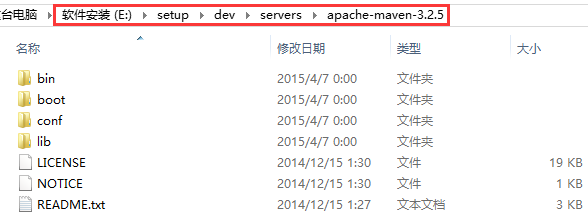
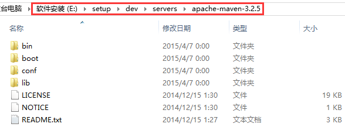
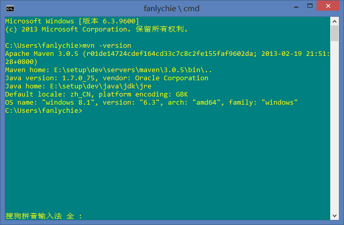
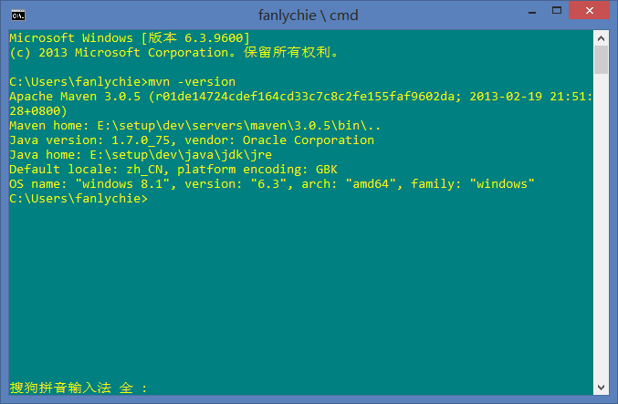

Maven 安装
来源：原创 发布时间：2015-04-07 归档：maven
环境 ：
Windows 8
JDK 7
Maven 3
版本选择
1> maven 3.3, 要求 jdk 1.7 或 jdk 1.7+
2> maven 3.2, 要求 jdk 1.6 或 jdk 1.6+
3> maven 3.1, 要求 jdk 1.5 或 jdk 1.5+
4> maven 3.0, 要求 jdk 1.5 或 jdk 1.5+
软件安装
以 maven 3.2 为例。下载 apache-maven-3.2.5-bin.tar.gz, 解压缩即可。

以下用 %maven% 表示 maven 的安装目录, 如这里的 E:/setup/dev/servers/apache-maven-3.2.5
配置本地仓库路径

以下用 %maven% 表示 maven 的安装目录, 如这里的 E:/setup/dev/servers/apache-maven-3.2.5
打开 %maven%/conf/settings.xml, 并编辑它。
<settings xmlns="http://maven.apache.org/SETTINGS/1.0.0"
xmlns:xsi="http://www.w3.org/2001/XMLSchema-instance"
xsi:schemaLocation="http://maven.apache.org/SETTINGS/1.0.0 http://maven.apache.org/xsd/settings-1.0.0.xsd">
<!-- localRepository
| The path to the local repository maven will use to store artifacts.
|
| Default: ${user.home}/.m2/repository
<localRepository>/path/to/local/repo</localRepository>
-->
<localRepository>F:/dev/repo/mvn-repo</localRepository>
<!-- interactiveMode
| This will determine whether maven prompts you when it needs input. If set to false,
| maven will use a sensible default value, perhaps based on some other setting, for
| the parameter in question.
|
| Default: true
<interactiveMode>true</interactiveMode>
-->
添加第 11 行配置, 路径即为 maven 本地仓库的位置。
配置环境变量
系统 --> 高级系统设置 --> 高级 --> 系统变量 --> 新建系统变量
变量名 ：MAVEN_HOME
变量值 ：E:\setup\dev\servers\apache-maven-3.2.5
添加 maven 变量到 Path
Path = .;%MAVEN_HOME%\bin
验证环境变量
变量名 ：MAVEN_HOME
变量值 ：E:\setup\dev\servers\apache-maven-3.2.5
添加 maven 变量到 Path
Path = .;%MAVEN_HOME%\bin
mvn -v 或 mvn -version

